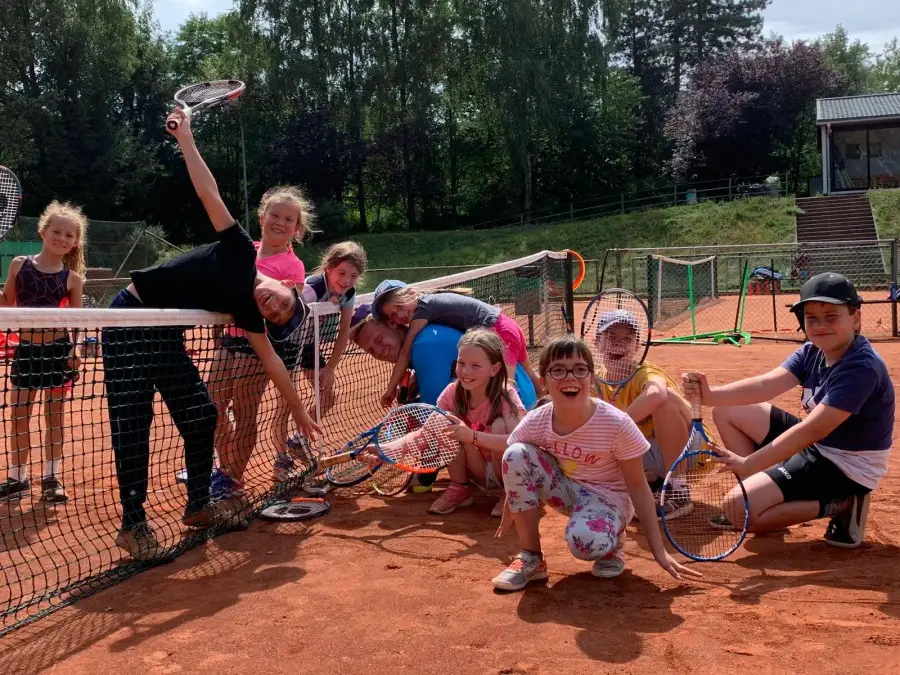

Jugend
Aktuell trainieren 35 Kinder und Jugendliche bei uns, betreut von der Tennisschule Network. Sechs Teams sind gemeldet. Die meisten spielen als Spielgemeinschaft mit Stennweiler, Landsweiler und Reden.
Meister Landesliga: Juniorinnen U15
Midfield · A-KlasseBambini · A-KlasseJuniorinnen U15 · LandesligaJunioren U15 · LandesligaJuniorinnen U18 · A-KlasseJunioren U18 · A-Klasse